単元3: エネルギー変換の技術
電気や機械の仕組みを学ぶ「エネルギー変換の技術」について整理します。各種発電の特徴、交流と直流の違い、電気回路の安全対策（短絡・漏電など）、そして動きを伝える機械要素（リンク、カム、歯車など）は、図解とセットで非常によくテストに出る重要項目です！
1. エネルギー変換と発電の仕組み
エネルギーは様々な形（電気、熱、光、運動など）に変換して利用されます。
① エネルギー変換効率（へんかんこうりつ）
- もととなるエネルギー（入力）に対して、使用目的に利用されたエネルギー（出力）の割合（％）をエネルギー変換効率といいます。無駄になる熱などのロスが少ないほど効率が高くなります。
- 熱機関（ねつきかん）：ガソリンエンジンや蒸気機関など、熱エネルギーを運動（機械）エネルギーに変換する装置。
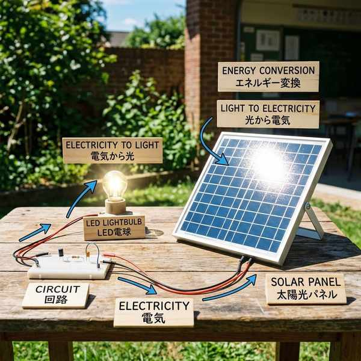
目的に変換されたエネルギーの割合（％）
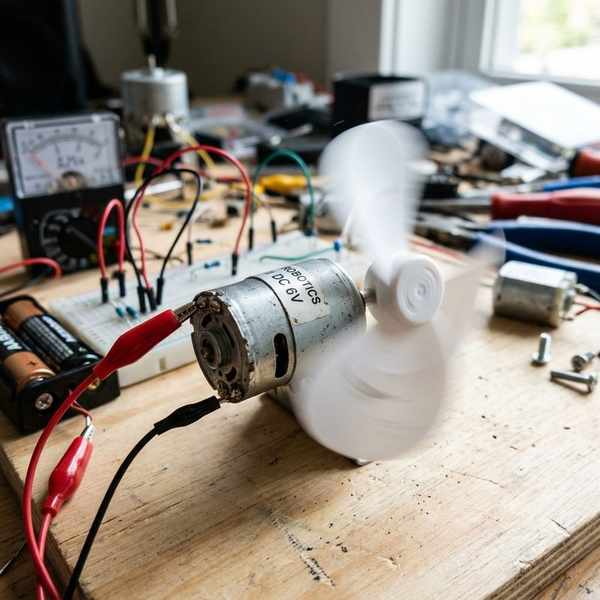
熱を運動に変えるエンジンの例（熱機関）
② 発電方式の特徴
- 火力発電：化石燃料を燃やして発電する。多量の二酸化炭素（CO2）を排出する課題がある。
- コンバインドサイクル発電：ガスタービンと蒸気タービンの両方を回すことで、変換効率を大きく高めた火力発電。
- 原子力発電：ウランなどの核燃料を利用する。発電時にCO2を出さないが、放射性廃棄物の管理に大きな課題がある。
- 再生可能エネルギー：太陽光、風力、水力、地熱など、資源が枯渇せず繰り返し使えるクリーンなエネルギー。
- 二次電池（にじでんち）：使い切りの「一次電池」に対し、スマートフォン等のバッテリーのように充電して繰り返し使える電池。
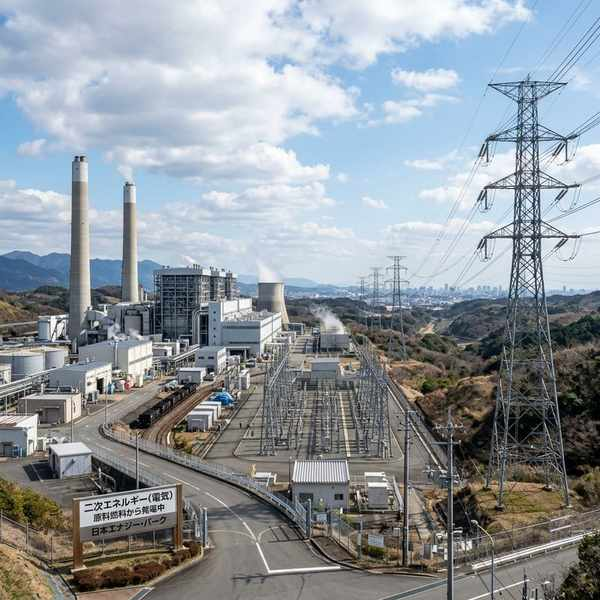
化石燃料を用いる「火力発電」
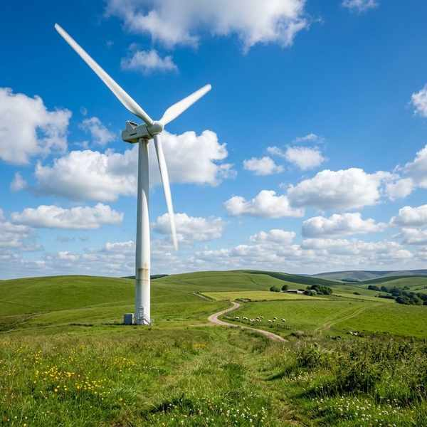
放射性廃棄物の課題がある「原子力発電」
風力や太陽光などの「再生可能エネルギー」
2. 送電と家庭の電気
① 交流（AC）と直流（DC）
- 交流（AC）：電圧の向きと電流の方向が周期的にプラスとマイナスに変わる電気。発電所から家庭のコンセントに送られる電気は交流です。変圧しやすい利点があります。
- 直流（DC）：電流と電圧の向きが常に一定の電気。電池やACアダプタから出力される電気。
- 周波数（Hz）：交流が1秒間に変化する回数。日本のコンセントは東西で異なり、東日本は50Hz、西日本は60Hzです。
- 柱上変圧器（ちゅうじょうへんあつき）：電柱の上部にあるバケツ型の機器。発電所から送られてきた高い電圧（6600Vなど）を、家庭用の100Vや200Vに引き下げる役割を持ちます。
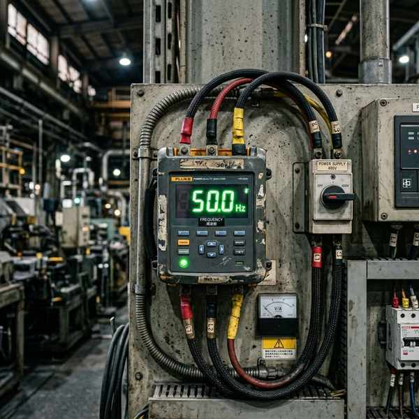
周期的に方向が変わる「交流（AC）」
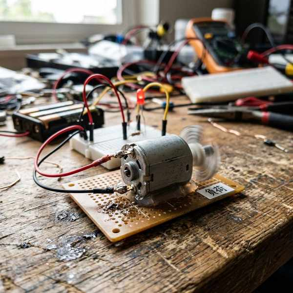
電圧を100V/200Vに下げる「柱上変圧器」
3. 電気回路と安全・点検
電気を安全に使用するための基本知識と図記号です。
① 回路の構成
- 負荷（ふか）：モータや電球など、電気エネルギーを光・音・運動などに変換して消費・利用する部分。
- 回路図：JISで定められた電気用図記号を使って表した図面。
- 発光ダイオード（LED）の図記号：通常のダイオードの記号の右上に、光を表す2本の矢印が描かれます。
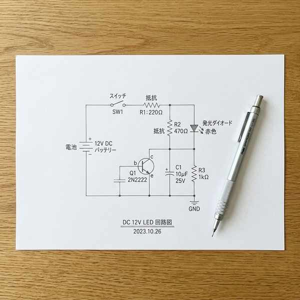
電気を光や熱に変える電球などの「負荷」
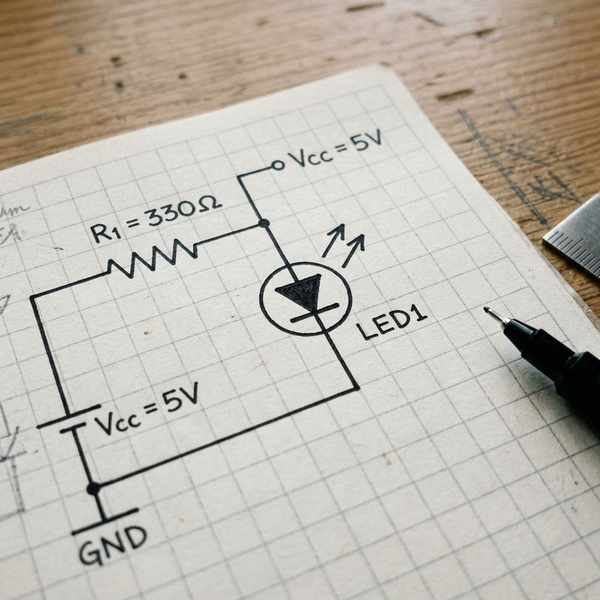
LED（発光ダイオード）のJIS図記号
② 事故と安全対策
- 短絡（ショート）：2本の導線が直接触れ合うなどして、負荷を通らずに過大な電流が流れてしまう非常に危険な状態。
- 漏電（ろうでん）：電線の絶縁被覆が破れるなどして、回路以外の金属部分等に電流が漏れ出てしまう現象。感電や火災の原因になります。
- 配線用遮断器（ブレーカー）：設定値を超える電流が流れたとき、自動的に回路を遮断して屋内配線を守る装置。
- 漏電遮断器（ろうでんしゃだんき）：回路のどこかで電気が漏れたとき、それを検知して自動的に電気を遮断する装置。
- アース線（接地線）：洗濯機や電子レンジ等に接続し、漏電時に電気を地面に逃がすことで感電を防ぎ、漏電遮断器を作動しやすくする安全線。
- 定格（ていがく）：電気機器が安全に使用できる限界スペック（定格電流・定格電圧）。
- トラッキング現象：コンセントに差し込んだプラグの隙間にホコリがたまり、湿気を吸って火花が散り、発火・火災に至る現象。
- 回路計（テスタ）：安全点検のために、回路の電圧・電流・抵抗などを測定できるマルチメーター。
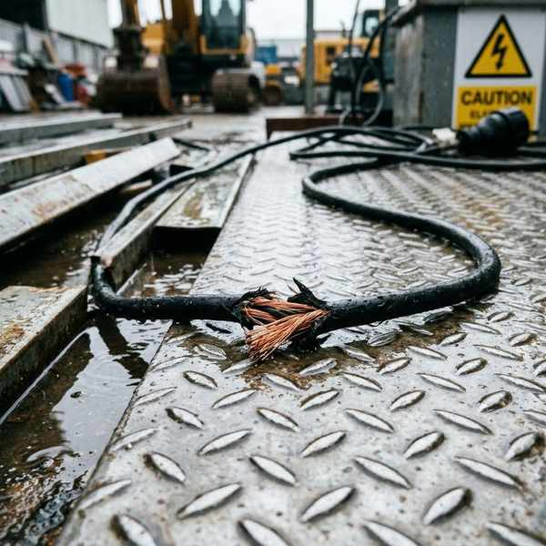
大電流が流れて発熱する「短絡（ショート）」
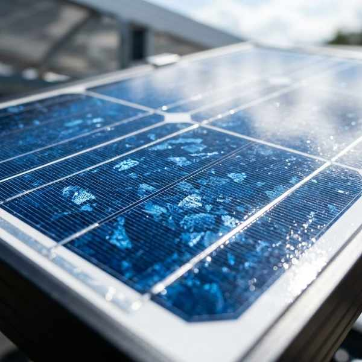
回路の金属部に漏れ出る「漏電」
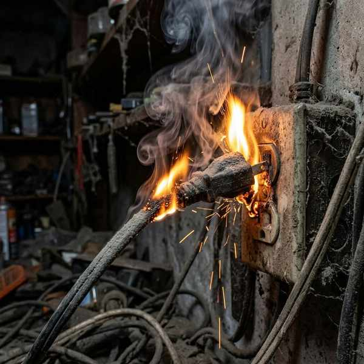
ホコリと湿気が原因の「トラッキング現象」
4. 動力を伝える「機械要素」
モータなどの回転を他の部品に伝え、動きの種類を変える部品の仕組みです。
① 動力伝達比（速度伝達比）
- 速度伝達比：回す側（駆動軸）と回される側（被動軸）の回転速度の比。
$$\text{速度伝達比} = \frac{\text{駆動軸の回転速度（または歯車・プーリの直径・歯数）}}{\text{被動軸の回転速度（または歯車・プーリの直径・歯数）}}$$
② さまざまな伝達・運動変換機構
- 摩擦車（まさつしゃ）：回転する2つの車を接触させ、その摩擦で動力を伝える。滑りやすいため大きな力には不向き。
- チェーンとスプロケット：自転車のように、凹凸のあるスプロケット（歯車）とチェーンを噛み合わせて動力を伝える。滑らず大きな力を伝達できる。
- ラックとピニオン：平らな棒状の歯車（ラック）と小さな丸い歯車（ピニオン）を噛み合わせ、回転運動を直線運動に変換する機構（例：車のステアリング）。
- リンク機構（4節リンク機構）：4本の棒（リンク）をピンでつなぎ、特定の動きを作る機構。
- クランク：リンク機構の中で、ぐるぐると1回転するリンク。
- てこ：1回転せず、一定の角度で揺れ動く（揺動する）リンク。
- てこクランク機構：最短のリンク（クランク）が回転すると、連接棒を介してもう一つのリンク（てこ）が往復揺動運動をする機構（例：車のワイパー）。
- カム機構：いびつな形をした「カム（原動節）」が回転することで、接触している「従動節」を規則的に往復（上下）運動に変換する機構（例：ミシンの針の動き）。
- 軸受（ベアリング）：回転する軸を支え、摩擦を減らしてなめらかに回すための共通機械部品。
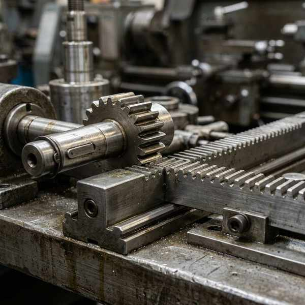
滑らず伝える「スプロケットとチェーン」
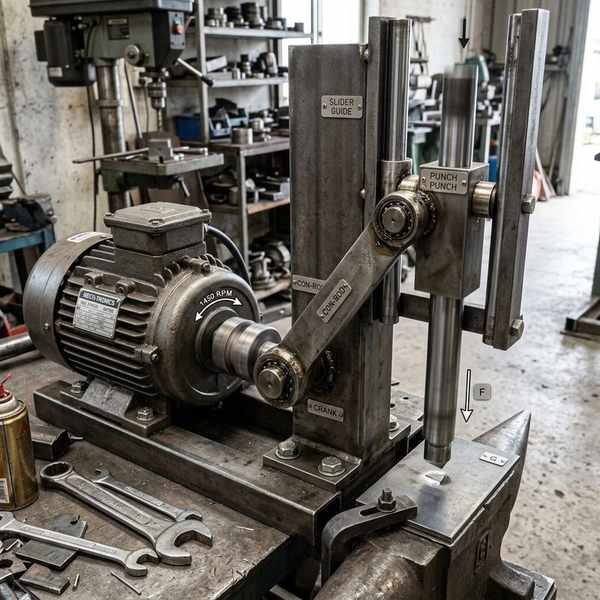
回転を直線に変える「ラックとピニオン」
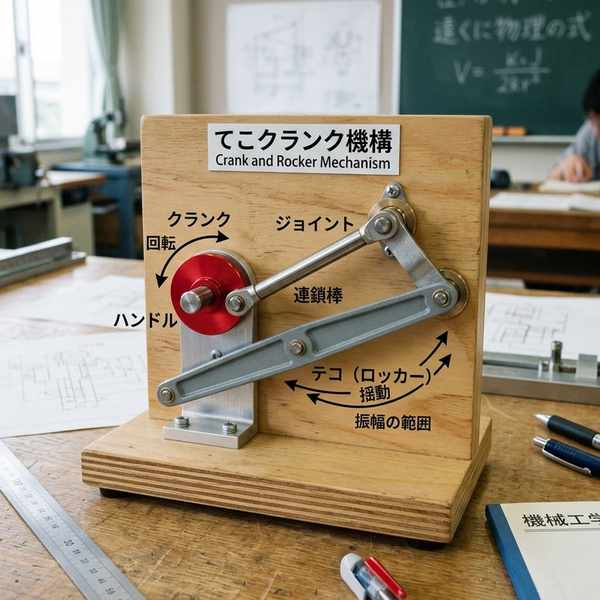
回転を揺れに変える「てこクランク機構」
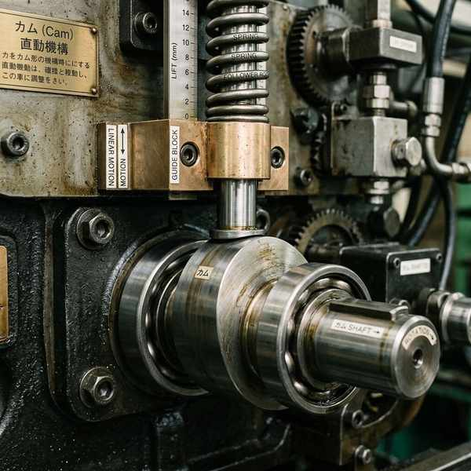
特定の往復運動をつくる「カム機構」
③ LCA（ライフサイクルアセスメント）
- 製品の材料採取から、製造、流通、使用、廃棄までの生涯すべての段階における環境負荷を総合的に評価する手法をLCA（ライフサイクルアセスメント）といいます。
🔥 定期テスト対策・暗記のコツ
① 短絡と漏電の言葉の定義
「短絡 ➔ 負荷を通らずショートし大電流が流れる」「漏電 ➔ 傷ついた被覆から電気が漏れ出る」。テストの穴埋めや正誤判定で非常にひっかかりやすいので注意！
② ラック＆ピニオン と カム機構
どちらも運動の変換ですが、「回転を直線運動に変える ➔ ラック＆ピニオン（直線的なギザギザ板）」「回転を複雑な往復運動に変える ➔ カム（卵型やハート型の回転板）」という違いを形状から見分けられるようにしましょう。
③ 東日本50Hz、西日本60Hz
日本の周波数の境界です。覚えるコツは「東五西六（とうごせいろく）」。東日本が50Hz、西日本が60Hzです！